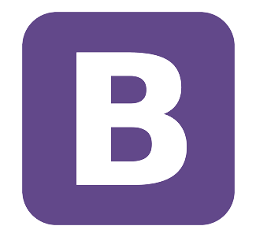
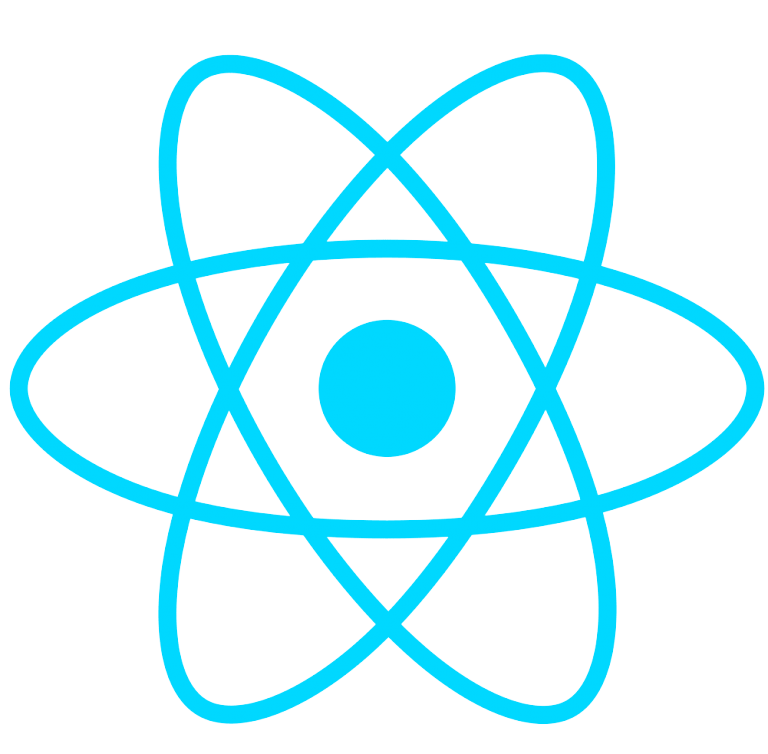

My Top Skills



💻 Como estudiante de la Universidad Autónoma de Tlaxcala (UATx) en la carrera de Ingeniería en Computación, me apasiona la tecnología 🚀, especialmente el desarrollo de páginas web, aplicaciones y la inteligencia artificial 🤖. Me interesa profundamente la interacción humano-computadora 🤝 y su impacto en mejorar la experiencia de los usuarios en plataformas digitales 🌐. Actualmente, participo en diversos proyectos 🎯 que buscan innovar en estos campos, mientras continúo ampliando mis conocimientos 📚 y habilidades 💡.
En mi tiempo libre 🕒, disfruto pasar momentos con mi familia 👨👩👧👦, especialmente con mis papás y hermanos. Valoro mucho aprender cosas nuevas 📚 y me motiva el constante crecimiento 🌱, tanto personal como académico 🎓. Me apasiona la idea de cómo la tecnología 💻 está transformando el mundo 🌍 y me emociona poder aportar a las innovaciones del futuro 🚀.
Lo que más me motiva a seguir en el área de Ingeniería en Computación 💻 es saber que cada avance tecnológico 🚀 tiene el potencial de cambiar la vida de las personas 👥. Me fascina la posibilidad de ser parte de esos cambios 🔄 y contribuir con soluciones 💡 que impacten positivamente en la sociedad 🌍.
Como estudiante 🎓, no soy conformista y me enorgullece ser perseverante 💪. Ante los problemas ⚠️, no me rindo fácilmente; siempre busco encontrar soluciones 💡, sin importar lo complicado que sea el camino 🛤️. En el futuro, me gustaría mejorar 📈 en el ámbito académico y profesional 🏢, además de trabajar en mi desarrollo personal 🌱 para convertirme en una mejor versión de mí misma ✨. Valoro profundamente a las personas que me rodean 👥, especialmente su sinceridad, empatía 💖 y apoyo 🤗, ya que esos valores son fundamentales para crecer juntos 🌟.
Este proyecto es una interfaz de pinterest creado con HTML-5 y CSS3.
Check it out